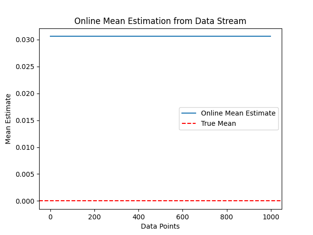

Introduction
"Online" algorithms designed for data streams are crucial in scenarios where data arrives continuously and cannot be stored entirely in memory. These algorithms process incoming data on-the-fly, making real-time decisions and updating their estimates as new information becomes available. Exploring the concepts and code behind online algorithms unveils innovative strategies for efficient and dynamic data processing.
Online Mean Estimation:
One fundamental online algorithm is the online mean estimator. This algorithm updates its mean estimate as each new data point in the stream arrives, providing a continuous and adaptive measure of the data's central tendency. The accompanying Python script demonstrates the implementation of an online mean estimator applied to a simulated data stream.
Visualization of Online Mean Estimation:
The resulting plot illustrates how the mean estimate evolves over time as new data points are processed. The red dashed line represents the true mean, while the blue line depicts the online mean estimate. This dynamic visualization offers insights into how the algorithm adapts to changing data patterns and provides an estimate that converges to the true mean.
Practical Significance:
Online algorithms are particularly valuable in scenarios where data arrives continuously or in large volumes. Their real-time processing capabilities make them suitable for applications such as monitoring systems, financial data analysis, and network traffic management. The trade-off between computation and memory efficiency makes online algorithms a powerful tool in handling streaming data.
Online Algorithms Plot:
Conclusion:
Exploring online algorithms for data streams sheds light on innovative approaches to dynamic and continuous data processing. As we encounter increasingly large and diverse datasets, the adaptability and efficiency offered by online algorithms become essential for extracting meaningful insights and making timely decisions in various domains.